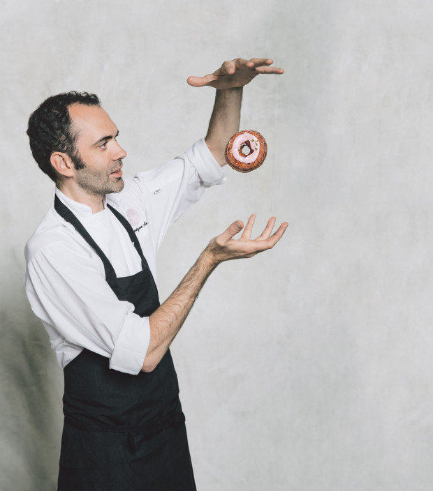
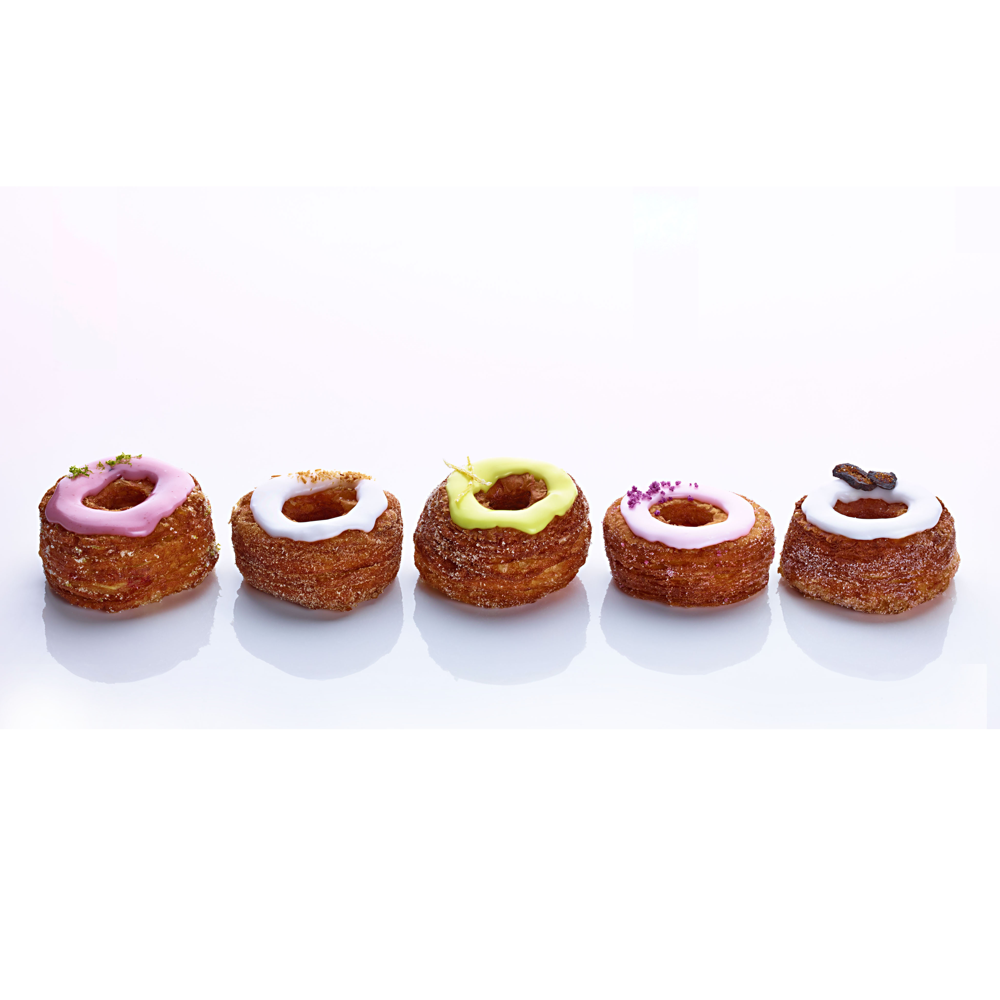
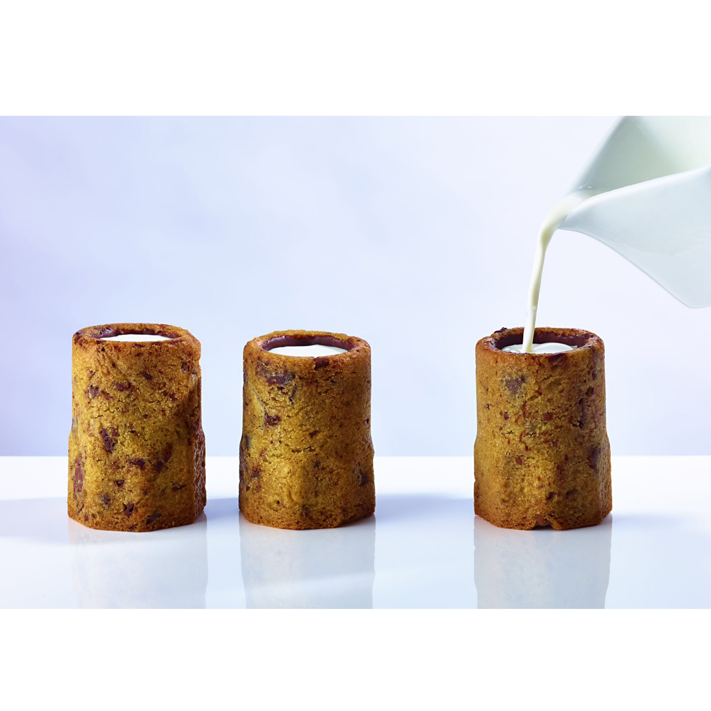
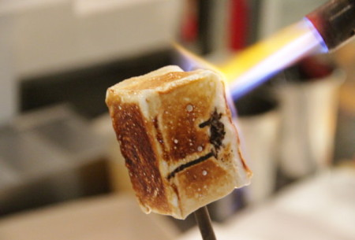
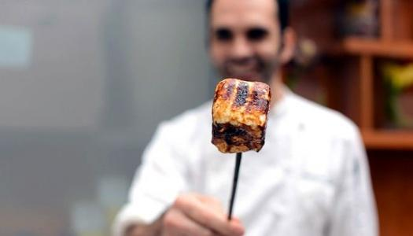
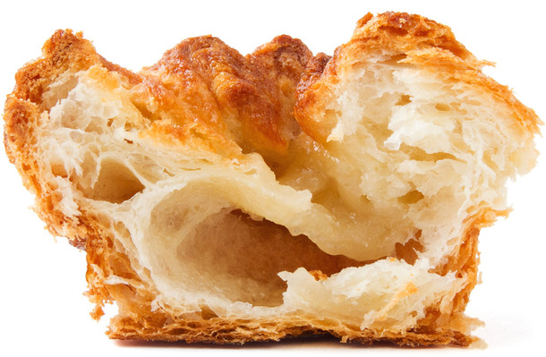
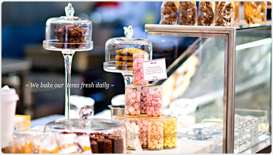
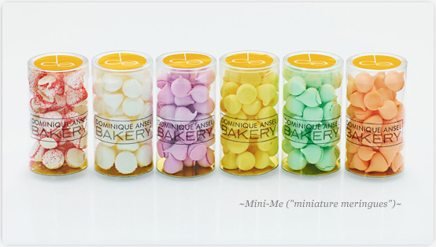
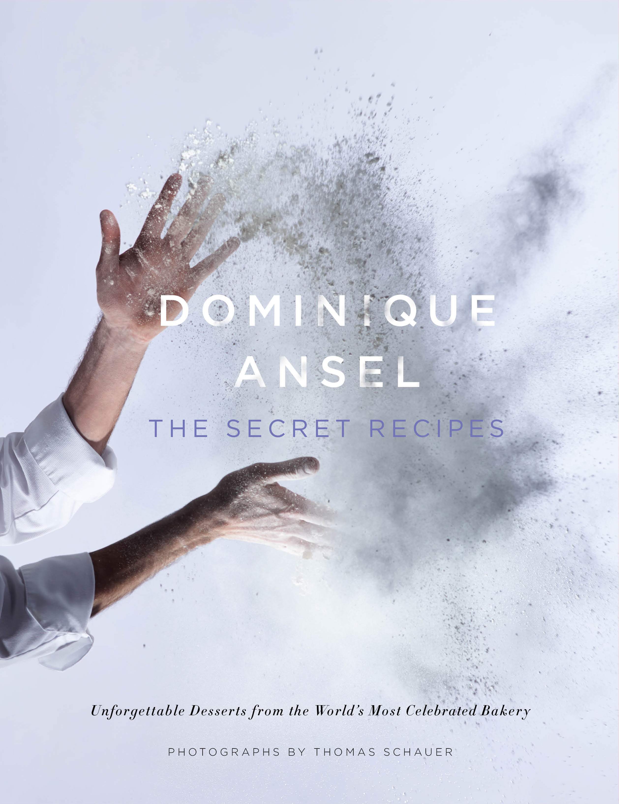

The pastry genius behind the Cookie Shot, the Frozen S’more, and something called a Cronut just wants… gummy candies?
You were his pastry chef for six years at Daniel. What did he teach you about running a business?
To always give your customers a unique experience, whether they were here last week or last year.
Did you hit the ground running there?
I had come straight from France. I could barely speak English and here I was, in charge of 10 people. I had no choice other than jumping in. Everything moved very, very fast. It was intense. But once I got it, it was amazing.
What’s the best piece of business advice you’ve ever received?
A lot of people try to give you advice, but they’re not necessarily the people who should. Having a vision is very important—believing in what you do and not having any doubts.


What’s your typical breakfast?
I get in early, so I usually make coffee and eat something—like a DKA [his interpretation of the ultra-buttery kouign-amann].
If you need a pick-me-up in the afternoon, what do you reach for?
I used to drink a lot of coffee—like eight double shots of espresso.
Whoa. Eight double shots? Because the work at Daniel was so insane?
Yeah, you have to be super-awake and on your feet all day. It’s very challenging physically and mentally. Now I only drink one double shot a day.
What do you crave when you get off work?
I love Asian food, like rice or noodles. It’s simple, but the techniques are very complex. It’s all about clean ingredients.
Did you always know you wanted to be a baker?
I wasn’t sure. I was a chef’s apprentice for two years, and then a baker’s apprentice for one. Then I did my military service; it was wonderful. I was in charge of training a French Guiana kitchen. A lot of the food was canned or vacuum-sealed—not very tasty or fancy—but it gave me a chance to use local ingredients.
Tell us about the last dessert that amazed you.
I had this dish at L’Atelier de Jöel Robuchon a few years ago that was a sphere made of red chocolate. The pastry chef poured a hot berry sauce over it and the crust on top opened up and looked like a flower. It was beautiful.


What’s one food that always takes you back to your childhood?
For me, food is all about texture, temperature, and emotion. I remember eating baguettes that were still hot from the oven, and tasting the nuttiness of the crust. It had this crunch, but it was still steaming and tender inside. When somebody eats my DKA, I hope they feel the same.
Do you remember the first time you ate a baguette?
When you’re a kid [in France], your parents give you the end piece of a baguette to build your teeth. I don’t remember the first time I had one because I grew up eating them.
Were you a picky eater as a kid?
Not really. My family was very humble. It was difficult to buy food each month. I had three siblings and my dad worked in a factory. That’s why I did a lot of fundraising last year to fight against hunger. I’d never had fancy food before working in a restaurant.
Many families struggle with money. One major debate is how to eat well on a limited income. What’s one trick you learned growing up?
We ate a lot of potatoes. I’m from the north of France, so there’s not much growing there. Beets, potatoes, wheat—that’s it. To make it interesting, we’d have mashed potatoes, fries, potato gratin… New Yorkers don’t eat many potatoes besides fries.
And yet there’s such variety at the Greenmarket.
In France, there are hundreds of kinds—like these small potatoes called Ratte. They’re very tiny and grow by the sea, so you pick them up, rinse them off, and eat them with a little butter and salt. Super simple.
What’s one underrated ingredient home cooks should use more?
Vietnamese cinnamon. It’s spicy and smoky and looks like wood chips. You have to grate it very finely with a Microplane.


And one tool you think every home cook should have?
A scale. It’s a lot more scientific and you get much better results.
What’s a French classic that could use an update?
Flan. It is almost like a tart or pie, with a very bouncy texture. It would be fun to work on the presentation because it looks so simple, like a slice of cake.
Do you have a favorite midnight snack?
Gummy candies. I need sugar.
And movie snack?
Peanut M&M’s—always.
Go-to cocktail?
I really like a Bloody Mary.
Really?! Most chefs hate them.
I know! But when one is done well—with good tomato juice and spices—it can be interesting.
What’s the strangest item in your fridge right now?
Kaya jam made with pandan leaves, or maybe fermented bean curd.
Death-row dinner of choice?
Sushi. Eating good fish makes me happy.


Name a food souvenir worth smuggling home.
Mont d’Or from France. It’s this seasonal cheese aged in its own crate. It has an orange crust on top and is very soft, very nutty, and very, very French.
Say you’re throwing a dream dinner party: Who is on the guest list?
Obama, Steve Jobs, and the cast of Saturday Night Live.
That’s quite the lineup. You’re so active on Instagram. Do you follow a lot of chefs or celebrities?
I don’t, actually; I follow people from other industries. Like, I’ve been into nail art lately. It’s fascinating—so precise, so small. It’s good inspiration because we’re very technical, too.
Okay, last question: People spend hours waiting in line for Cronuts. When is the last time you waited in line for food?
I’ll wait up to 45 minutes for a table at Kunjip in New York City’s Koreatown. And I’ve waited an hour and a half for Shake Shack. It was worth it.
This interview is pegged to the release of our annual Restaurant Issue. Name one celebrity chef you can really get behind.
Daniel Boulud, because I know him personally. It’s amazing how much fun he brings to a room.